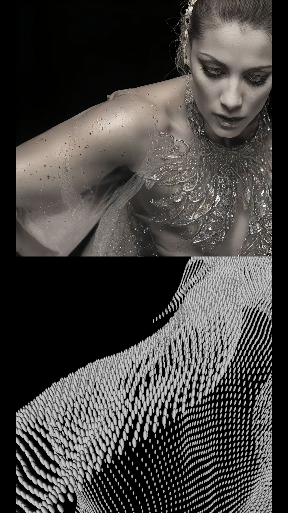
Rite of Spring
Do androids dream of cultural stereotypes?
Rite of Spring explores the interplay between artificial intelligence, cultural bias and the representation of the human form — observed through the lens of ballet, an art form historically dominated by the idealised female body.
The AI is prompted with a generic term: dancer. Yet the system persistently renders the subject as a feminine body, even as human interaction forces sudden change. This underlines the bias embedded in the data used to train these systems: it is impossible to escape societal norms and stereotypes, despite gender-neutral input.
Visitors control an evolving layer of points in space, generated in Derivative TouchDesigner. A Stream Diffusion instance scans the shape and translates it, in real time, into a continuously moving and transforming dancer.
As in Stravinsky's Rite of Spring, this dancer is a prisoner of a superimposed role — dancing until its death, or in this case, until the system shuts down.
- EngineDerivative TouchDesigner — generative point-cloud patch
- ModelLocal Stable Diffusion / Stream Diffusion, real-time img2img
- InputHand tracking — position, rotation, open/closed grip
- OutputTwo synchronised displays: the raw geometry and the AI's reading of it
- ComponentTouchDesigner component by Lyell Hintz (@dotsimulate)
Concept notes
A silent will lies in the machine. It keeps dreaming of ballerinas when the input is a neutral word.
Why is the dancer always a ballerina? Bad training? Can a machine hold a bias if it learns from a biased culture? Is "good" training possible if culture was written by those in a position of power — and is there such a thing as an unbiased culture?
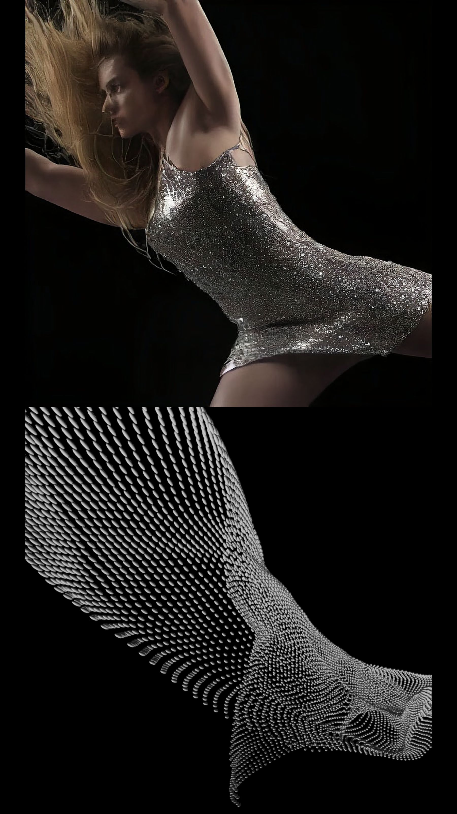
The interface
There is no screen to touch and nothing to read. A visitor holds one hand above the controller and the shape answers.
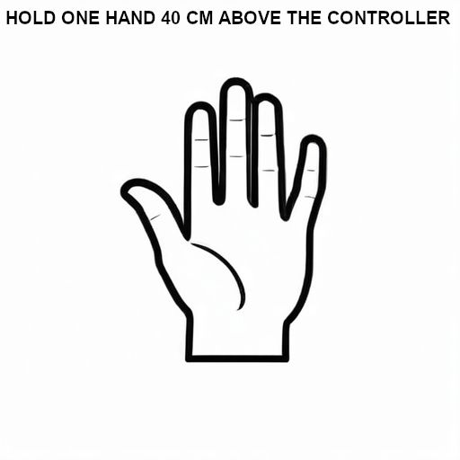
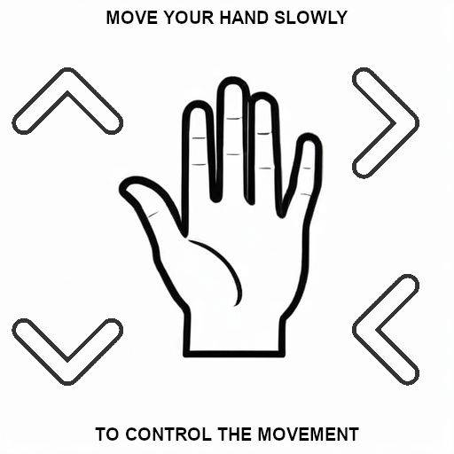
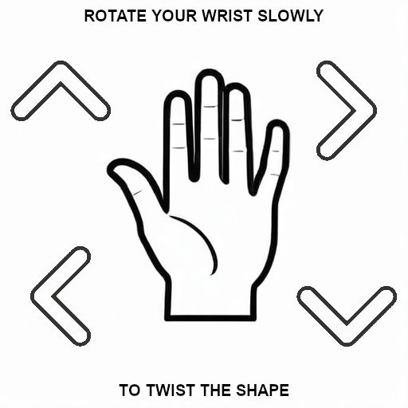
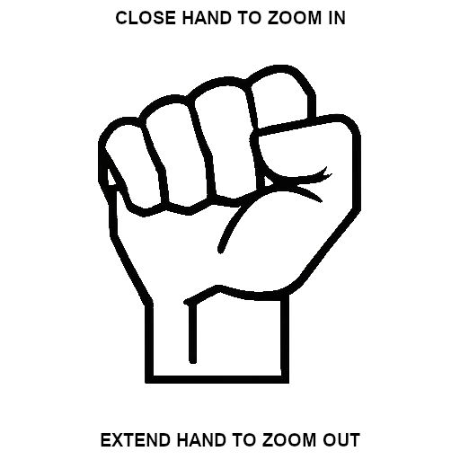
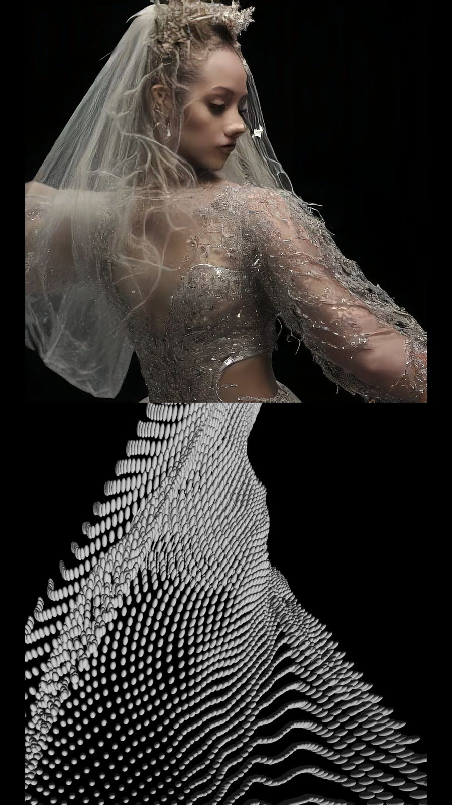
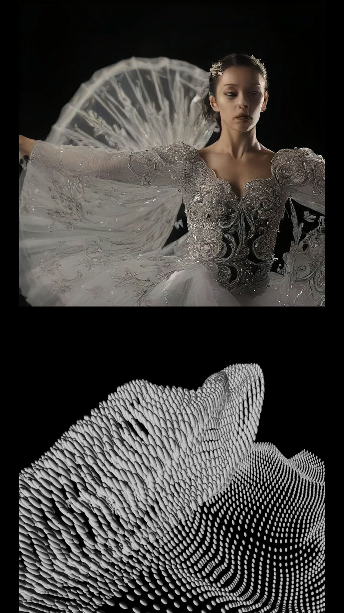
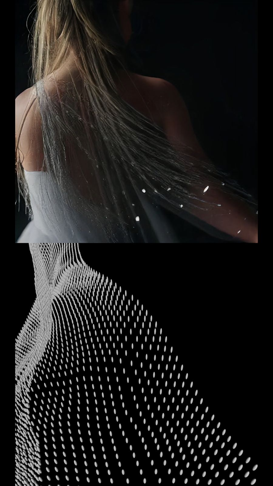
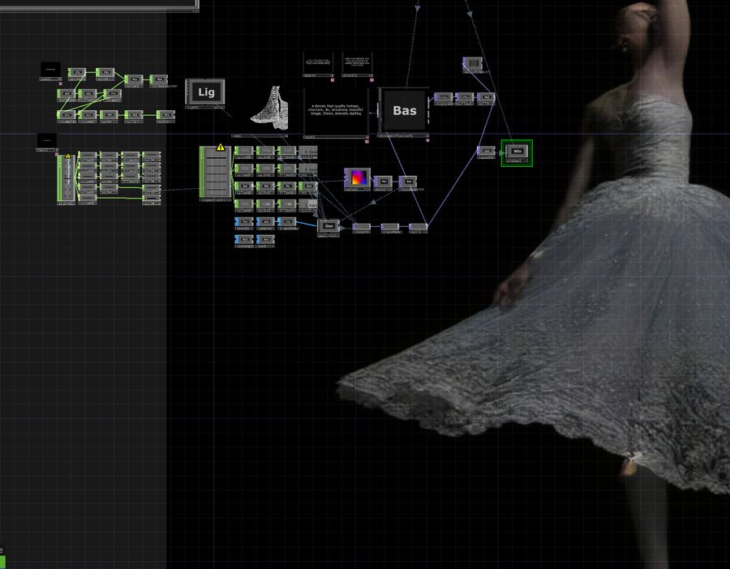
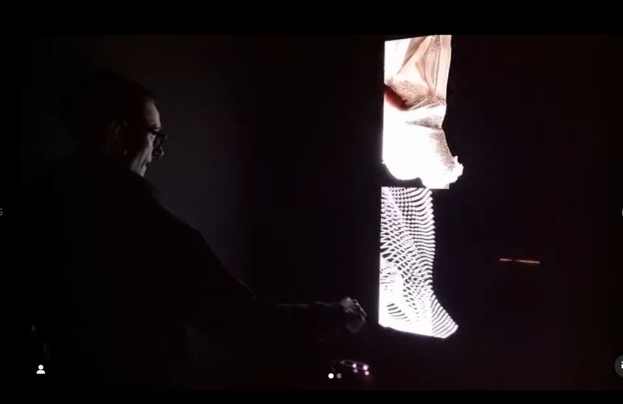
Credits
- Concept, development & realisationEmanuele Musca — Evestrum_AV
- TouchDesigner componentLyell Hintz — @dotsimulate
- Shown atKHROMA New Media Art Center, Berlin · Aura Labs, Berlin
Planned development
- 01Visitor prompting — the audience becomes part of the research, via controlled word lists on a MIDI wheel or free keyboard input
- 02Ultraleap upgrade for finer hand tracking
- 03MIDI keyboard and audio reactivity
- 04Higher output resolution, CRT screen for the AI feed
- 05Large language model integration